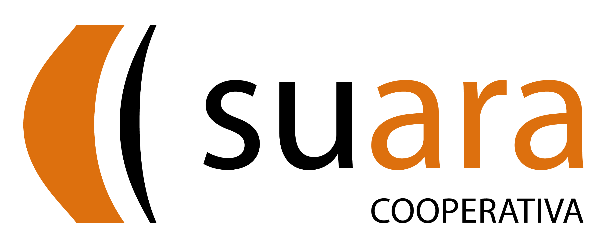

The main objective in ROB-IN is to develop the enabling technology towards intelligent assistive robotics, and not to develop a final robotic solution at high TRL. Thus, the partners are experts in science and technology development (CSIC, UPC), data management and analysis (DATISION) and in care assessment (SUARA). Obviously, this is only a fraction of the value chain required to develop effective assistive robots, but at this point we still need to develop and validate some key enabling technologies. Next step will to involve robot manufacturers, government agencies and other end-user organisations!

CSIC is the largest public institution dedicated to research in Spain and the third-largest
in Europe. The Institut de Robòtica I Informàtica Industrial (IRI) is a strong interdisciplinary
centre that hosts researchers from the Technical University of Catalonia (UPC) and the
CSIC. IRI has been recognized with the María de Maeztu Seal of Excellence
(MDM-2016-0656) from the Spanish Ministry of Science. IRI’s Perception and
Manipulation group focuses on enhancing the perception, learning, and planning
capabilities of robots to achieve higher degrees of autonomy and user-friendliness during
everyday manipulation tasks.

Universitat Politècnica de Catalunya - Barcelona Tech (UPC) is a leading Spanish University both in education and research. The project will be carried out at the Center for Language and Speech Technologies and Applications (TALP) which comprises the Speech Processing and Natural Language Processing research groups. The Speech Processing Group was created in 1985 and has been working on speech-to-speech and statistical machine translation since 2001. This research group has its own speech recognizer, speech synthesizer and machine translation systems and regularly participates in international evaluations with great results. TALP has an active participation in research projects and a large record of publications in ISI-indexed journals and international conferences (https://mt.cs.upc.edu).
Suara is a social and non-profit cooperative with almost 40 years of accumulated experience in the care sector, which responds to the whole life cycle of people. With more 28 than 4,600 professionals, it manages a wide range of services and facilities, developing our activity in the fields of social services, care for dependency, children and families, well-being and health, the elderly, education and training, and employment and work among others.

Datision is a spin-off of the UPC and the CSIC. Its main objective is to help industrial companies to research and develop innovative projects on advanced data analytics and computer vision. The projects they carry out are based on the combination of their knowledge in Data Science technologies and the knowledge of customers of production processes, which allows them to obtain new capabilities, systems and in some cases products that will undoubtedly be a differential value over the competition. Datision has expert personnel in the application and development of artificial intelligence algorithms, both for the treatment of complex images and for the analysis of production data. Datision's founding team has in its DNA the innovation and research in new technologies and capabilities in the field of advanced data analytics through artificial intelligence. Datision has several projects applying Data Science techniques.